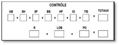

Les valeurs pour AB, SH, SF, BB, HP, IO et R sont tirés des totaux du tableau offensif de l'équipe dont il s'agit.
 |
La valeur (TIE) désigne le nombre de coureurs ayant atteint les bases en cas de prolongation (TieBreak). L'application de la règle de la prolongation est expliquée à l'annexe 2. |
LOB désigne le nombre total de coureurs laissés sur les bases de l'équipe dont il s'agit ; ce nombre doit être tiré de la case correspondante sous la colonne de la dernière manche du match.
PO désigne le nombre total de joueurs mis hors jeu, enregistré dans les statistiques défensives de l'équipe adverse.
IMPORTANT: Les totaux obtenus à partir des deux calculs tests doivent être identiques. Dans le cas contraire, toutes les données pertinentes doivent être réexaminées afin de trouver l'erreur.